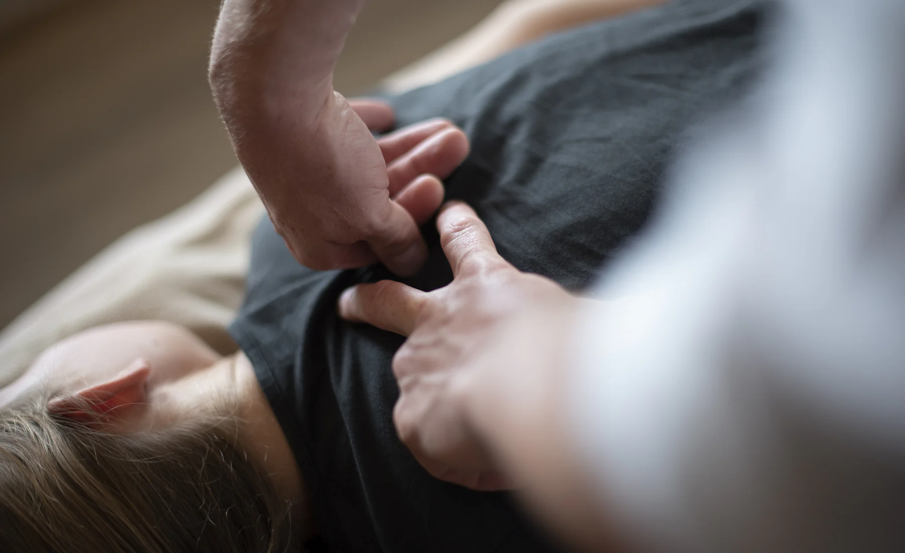
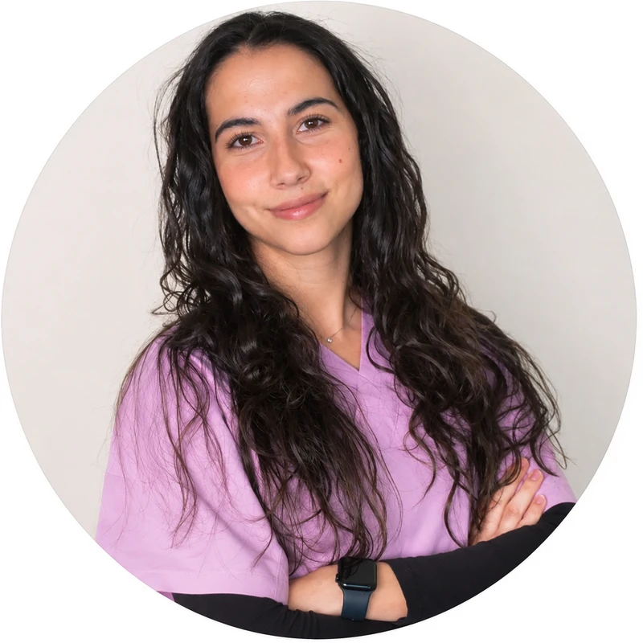
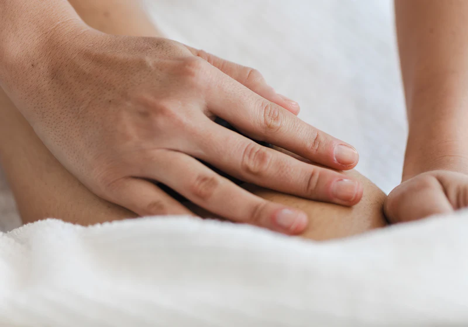
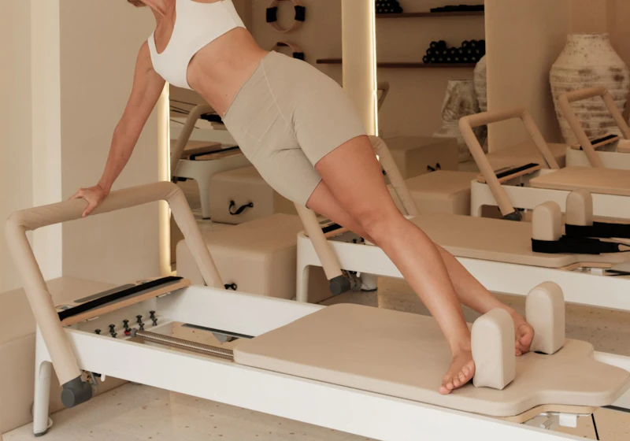

Neonati e bambini
Un approccio osteopatico attento e delicato, rivolto alle esigenze dei più piccoli, con particolare attenzione alla valutazione delle asimmetrie e delle tensioni muscolo-scheletriche.

Dott.ssa Irene Mussi · Osteopata D.O.
Un approccio osteopatico delicato e personalizzato, dedicato alle esigenze di neonati, bambini, donne in gravidanza e persone di ogni età.

Chi sono
Sono la Dott.ssa Irene Mussi, Osteopata D.O., e mi dedico al benessere delle persone con un'attenzione particolare all'ambito materno-infantile.
Credo che ogni persona abbia esigenze diverse e che ogni percorso debba partire dall'ascolto, dal rispetto e da una valutazione attenta della sua storia.
Mi sono formata presso il TCIO di Milano, approfondendo l'approccio osteopatico in ambito strutturale, viscerale e cranio-sacrale.
Il mio interesse per il mondo materno-infantile mi ha portata a proseguire la formazione attraverso il Master triennale in Osteopatia Pediatrica presso SIOP Firenze, attualmente in corso, con un percorso che integra studio teorico ed esperienza pratica.
Nel mio percorso ho maturato esperienze cliniche in ambito pediatrico presso l'Ospedale Meyer di Firenze e i centri Kairos, confrontandomi con esigenze differenti e sviluppando una particolare attenzione alla delicatezza e alla personalizzazione del trattamento.
Ho inoltre approfondito l'ambito pediatrico attraverso tre corsi post-graduate con Guido Viola e seguito una formazione specifica dedicata alla donna in gravidanza.
Il mio obiettivo è offrire uno spazio di ascolto e attenzione, nel quale ogni persona possa sentirsi accolta e accompagnata con rispetto.
A chi mi rivolgo
Un percorso personalizzato che considera le esigenze, i cambiamenti e le caratteristiche di ogni persona.
Un approccio osteopatico attento e delicato, rivolto alle esigenze dei più piccoli, con particolare attenzione alla valutazione delle asimmetrie e delle tensioni muscolo-scheletriche.
Un accompagnamento personalizzato nei cambiamenti della maternità, con attenzione al comfort corporeo, alla mobilità e alle tensioni muscolo-scheletriche.
Un percorso individualizzato dedicato alla mobilità, alle tensioni muscolo-scheletriche e alle esigenze legate alla quotidianità e all'attività fisica.
Approccio
Un modo di prendersi cura della persona che parte dall'attenzione alle sue esigenze e valorizza la personalizzazione del percorso.
Comprendere la persona, la sua storia e le sue esigenze.
Adattare le tecniche e l'intensità del trattamento alle caratteristiche individuali.
Considerare ogni situazione nella sua specificità, rispettando i tempi di ciascuno.
Riconoscere quando è opportuno il confronto con altri professionisti sanitari.
Servizi
Percorsi osteopatici che tengono conto delle caratteristiche della persona, delle sue necessità e della fase della vita che sta attraversando.
Un percorso dedicato a chi convive con tensioni e dolori della colonna o con episodi ricorrenti di mal di testa, partendo da una valutazione attenta di postura e mobilità.
Dolori alla schiena
Mal di testa

Un approccio delicato per accompagnare la persona quando stress e tensioni si riflettono sul corpo, sul riposo e sull'apparato digestivo, in sinergia con il percorso medico.
Disturbi da stress
Disturbi digestivi

Un percorso pensato per il benessere dell'area pelvica e per chi pratica attività fisica, con attenzione al recupero, alla mobilità e al gesto sportivo.
Disturbi uro-genitali
Sportivi
Un approccio dedicato ai più piccoli e alla donna nelle diverse fasi della maternità, con tecniche delicate e nel rispetto delle indicazioni di pediatra e ginecologo.
Pediatria
Gravidanza e post-parto
Come funziona
Contattami per ricevere informazioni e concordare un appuntamento.
Dedichiamo il tempo necessario a conoscere le tue esigenze, la tua storia e gli aspetti rilevanti per il percorso.
In base alla valutazione, individuiamo un approccio personalizzato e adeguato alla tua situazione.
Al termine condivido con te le indicazioni utili e valutiamo insieme se e come proseguire, nel rispetto dei tuoi tempi.
Dove ricevo
Ricevo su appuntamento in diverse località della Lombardia, offrendo percorsi personalizzati in ambienti professionali e accoglienti.
Indirizzo in arrivo
Indirizzo in arrivo
Indirizzo in arrivo
FAQ
Mi occupo di persone di diverse età, con una particolare attenzione a neonati, bambini e donne in gravidanza, oltre che ad adulti, anziani e sportivi. Valuto ogni situazione in modo individuale.
Sì, posso valutare con te un percorso personalizzato anche durante la gravidanza, tenendo conto della fase gestazionale, delle tue condizioni e delle eventuali indicazioni del medico.
Nel primo incontro ascolto con attenzione le informazioni che mi fornite come genitori e svolgo una valutazione appropriata. Adatto l'eventuale trattamento all'età e alle esigenze del bambino e, quando necessario, mi confronto con il pediatra.
Dedico il primo appuntamento alla raccolta delle informazioni utili, alla comprensione delle tue esigenze e a una valutazione individuale, per stabilire insieme se e come procedere.
Puoi scrivermi attraverso il modulo di contatto qui sotto oppure su Instagram: ti darò tutte le informazioni sulle sedi e sulle modalità di prenotazione.
Contatti